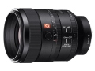
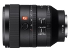
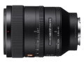

器材库 > 35mm画幅AF定焦镜头 > FE 100/2.8 STF GM OSS

详细规格
镜头类型
中远摄/远摄镜头
发布日期
2017-02-08
焦距
100mm
最大光圈
f/2.8
最小光圈
f/20
视角（对角）
全画幅：24° / APS-C：16°
镜头结构
13片/10组
非球面镜片
1片
低/超低色散镜片
1片
光圈叶片
11片
最近对焦距离
85cm
最大放大倍率
0.14倍
驱动马达
SSM
滤镜口径
72mm
镜头卡口
Sony E
防抖
是
颜色
黑色
尺寸
85.2×118.1mm
重量
700g
附件
遮光罩，镜头盖，镜头软袋
煌熇2019-07-18 11:044.5 分
操作性 4.50耐用性 4.50性价比 3.50解像力 5.00色彩还原 5.00机械结构 4.50
产品图 / 样片
FE 100/2.8 STF GM OSS

FE 100/2.8 STF GM OSS

FE 100/2.8 STF GM OSS
评测 / 相关文章
- 详细内容 （存档）
- 爱上梦幻般的焦外 索尼FE 100mm STF镜头评测 （存档）
- ［试用］索尼FE 100/2.8 STF GM OSS实拍样张 （存档）
- ［资讯］CP+2017独家报道 各家新货逐个品（下） （存档）
- ［资讯］FE100/2.8STF与70200GM焦外对比 （存档）
- ［行情］索尼新品开始预订 （存档）
- ［资讯］第四支GM镜头觐见 索尼两镜一灯新年种草 （存档）